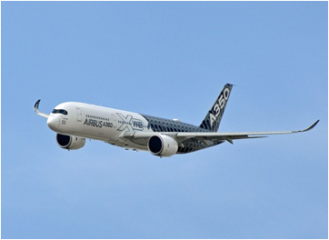
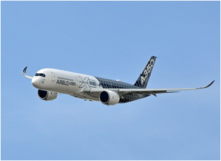
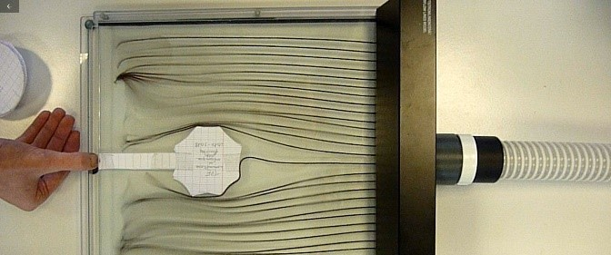

TPE : Le biomimétisme dans la mécanique des fluides
En quoi la nature est-elle une source d'inspiration pour les ingénieurs en mécanique des fluides ?
Introduction
Les Principes Physiques
\[ \huge F=\frac{1}{2} \rho v^{2}SCz\]
Avec 𝐹 en Newton, 𝜌 en kg/m3, v en m/s, S en m2, Cz est le coefficient de portance donc pas d’unité
\[ \huge P=m\cdot g\]
Avec P en Newton, M en kg et g l’intensité de la pesanteur terrestre en N/kg (9.81 N/kg sur Terre)
\[\huge F= v_{e} + Q_{m} +A_{1}(P_{1}-P_{a})\]
- 𝐹, poussée en newton (N)
- ve, vitesse d'éjection des gaz en m/s
- 𝑄m, débit massique en kg/s
- 𝐴1, aire de la section de sortie de la tuyère en mètres carrés
- 𝑃1, pression à la sortie de la tuyère (c’est-à-dire a la sortie du conduit reliant le moteur a l’exterieur) en Pa
- 𝑃a, pression ambiante ou pression à l'extérieur en Pa
- Ici, on observe une forme dont la surface est moins importante. Cependant, son coefficient de traînée est toujours trop fort : des tourbillons, bien que moins importants, se créent toujours et l’objet est toujours freiné par l’écoulement de l’air, bien que moins que pour le premier objet.
- La forme est ici bien plus adaptée à l’écoulement de l’air : aucun tourbillon n’apparaît. Ici, le coefficient de trainée est faible et l’objet a bien moins de mal à avancer.
- On remarque que la surface présentée a l’écoulement de l’air n’est pas profilée. D’importants tourbillons apparaissent et ralentiraient donc l’avion. En effet, la pression diminue a l’arrière de l’objet et selon le principe de Bernoulli, l’objet est aspiré vers l’arrière.
La formule exprimant la trainée est :
\[\huge Fx=\frac{1}{2}\rho SC_{x}v^{2}\]
avec 𝜌 masse volumique du fluide, v la vitesse, 𝑆 la surface de référence et 𝐶x le coefficient de traînée.
La formule exprimant la trainée est :
\[ \huge \rho \frac{v^{2}}{2}+\rho gz+P = Constante\]
Avec 𝜌 la masse volumique du fluide en kg/m3, 𝑣 la vitesse du fluide en m/s, 𝑔 l'accélération de la pesanteur (sur Terre = 9.81 𝑚.s-2) , 𝑧 le dénivelé vertical du conduit en m, 𝑃 est la pression statique en Pa.
L'exemple de la cigogne
Ces rémiges servent de « barrières », empêchant l’air de remonter sur le haut de l’aile. De plus, si les cigognes diminuent ainsi la trainée provoquée par les tourbillons marginaux, elles s’en servent même de poussée, grâce à la particularité de ces plumes d’être mobiles.
L’évolution naturelle a d’abord commencé à faire pendre mollement l’aile des oiseaux planeurs comme les oies. Puis, petit à petit l’aile a continué d’évoluer pour obtenir la meilleure forme, en jouant sur l’élasticité de celle-ci. Au final, cela leur permet un vol plus lent, et par conséquent plus manœuvrable.
(1) Schéma du squelette d’une aile d’oiseau, tel que la cigogne.

(2) Schéma des plumes d’une cigogne.
 

L'exemple du requin
On observe sur la photo ci-contre que l’écoulement de l’air (modélisé par les fils de laine) épouse la forme de la sphère. De plus, les fils restent relativement parallèles aux autres, montrant que l’air dans la couche limite est peu turbulent.
En revanche, ici avec une forme composée d’alvéoles, l’écoulement contre la paroi devient plus turbulent. Or, un écoulement turbulent accroche mieux la surface de l’objet. Le point de séparation des deux masses d’air sera donc délayé.
On a donc mis en évidence l’effet des alvéoles sur l’écoulement de l’air dans la couche limite. Le résultat de l’expérience aurait été plus spectaculaire avec des alvéoles plus courtes et plus creusées en forme de V et si on avait pu les disposer plus proche du début des fils pour voir correctement le vortex créé à l’arrière.
On voit bien ici les turbulences causées par les denticules et la diminution de la surface en contact direct avec l’écoulement du fluide.
L'exemple de deux crevettes
Conclusion
Arthur Babin, Hugo Josselin, Thomas Papon, Théo Soler